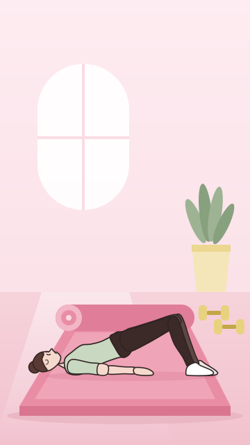

25-35 min
Ogólny program dla jeźdźców
Siła, core, równowaga i wytrzymałość. Dla osób, które chcą jeździć dłużej i pewniej.
- Stęp
- Kłus
- Galop, wkrótce
2-3 razy w tygodniu
Krótka poranna rutyna, która mieści się przed obrządkiem i pracą. Oddech, aktywacja i mobilność, żeby ciało było gotowe na cały dzień i na jazdę.
i 3 kolejne
Każdy level kończy Próba Mocy. Zaliczasz ją i przechodzisz dalej z rozetą.
Level 1, 3 tygodnie
10 minut każdego ranka: oddech, aktywacja i mobilność.
Level 2, 3 tygodnie
15 minut: więcej równowagi, siły stóp i pracy tułowia.
Level 3, wkrótce
Poranna rutyna przed treningiem w siodle i przed startami.
Tak wygląda jeden dzień w programie: cztery bloki, krótkie ćwiczenia i licznik na ekranie. Włącz podgląd i sprawdź, jak to działa.
Rozgrzewka2 ćwiczenia
Mobilność2 ćwiczenia
Część główna2 ćwiczenia
Rozciąganie2 ćwiczenia
Czasy jednej serii. W pełnym treningu część główna ma 2-3 rundy.
Zobacz pełny treningW demo na przykładzie Gimnastyki

Mobilność, blok 2 z 4Koci grzbiet
0:35
Ruch z miednicy, spokojny oddech
Następne ćwiczenie
Obróć telefon i zobacz, jak zmienia się ekran. Trening leci dalej.
Na koniec levelu Stęp sprawdzasz się w kilku ćwiczeniach. Zaliczasz i wchodzisz w Kłus z rozetą. Nie wyszło? Tydzień celowanego treningu i podchodzisz jeszcze raz.
Chcesz opinii z zewnątrz? Wyślij nagranie z Próby, a Justyna odpisze w 2-3 dni. Weryfikacja Próby
Najczęstsze pytania o Ranne Moce.
Tak, nazwa to tylko podpowiedź. Liczy się regularność.
Nic się nie dzieje. Seria liczy się w ciągu 3 tygodni, a nie dzień po dniu.
Na start tak. Kiedy złapiesz nawyk, możesz dołożyć Gimnastykę albo Ogólny program.
W karnecie masz wszystkie trzy. Najlepiej łączą się na zmianę, w różne dni.
Siła, core, równowaga i wytrzymałość. Dla osób, które chcą jeździć dłużej i pewniej.
Mobilność, gibkość, postawa i symetria. Dla sztywnych bioder i krzywego dosiadu.
Zapisz się, odbierz rozgrzewkę przed jazdą i sprawdź pierwszy trening programu za darmo.
Zapisz się